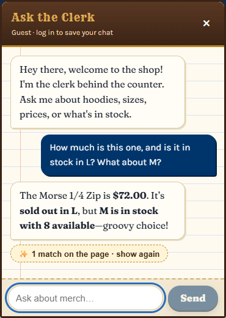
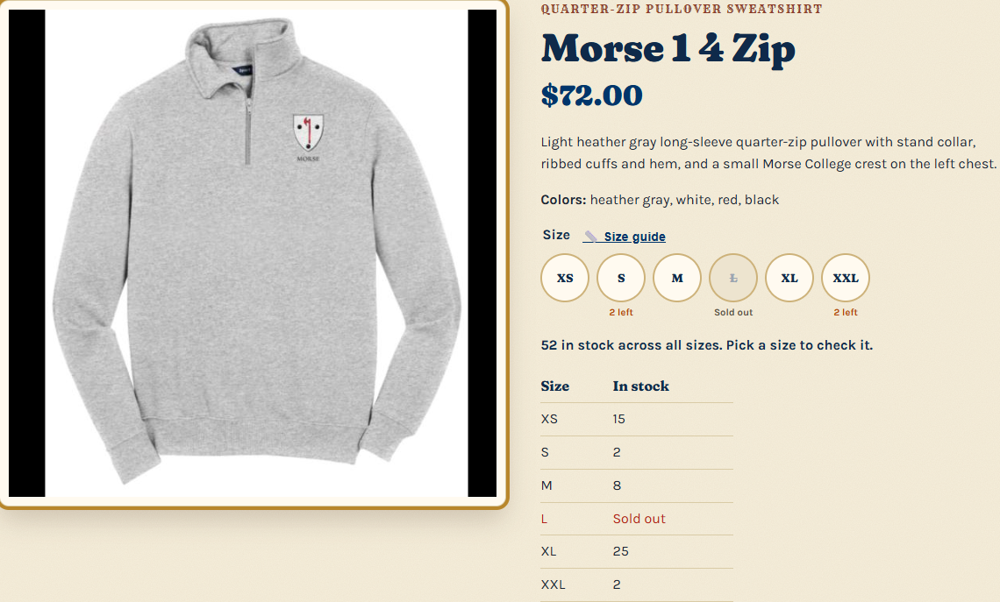
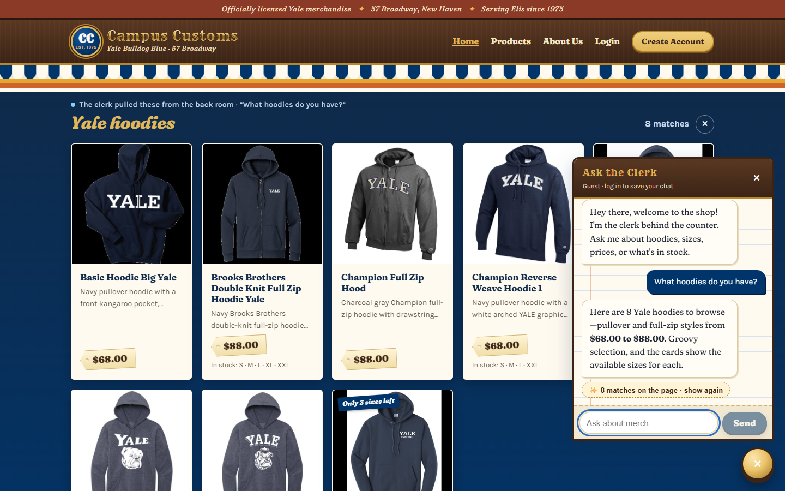
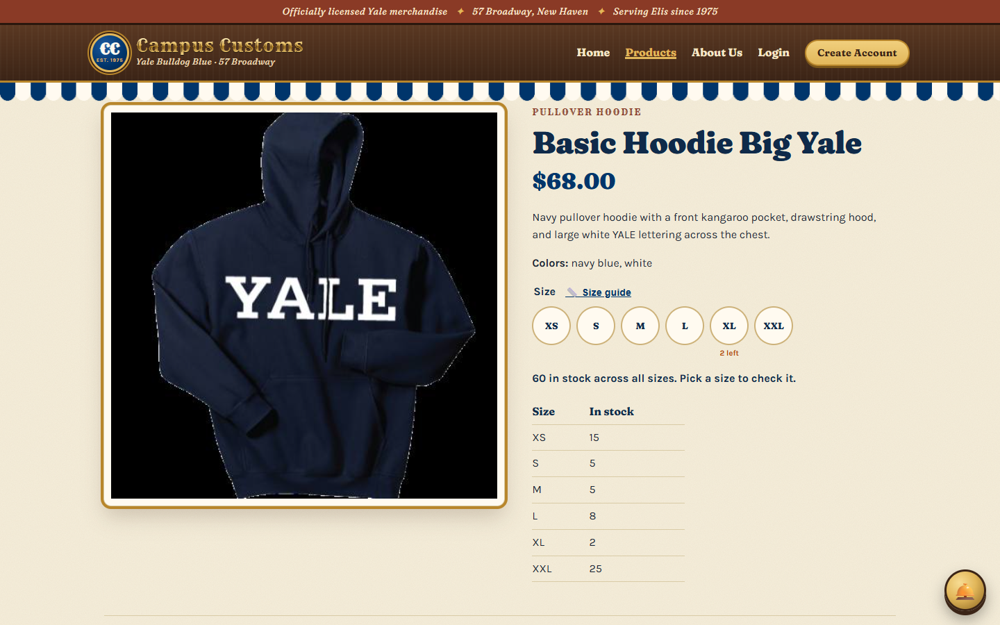
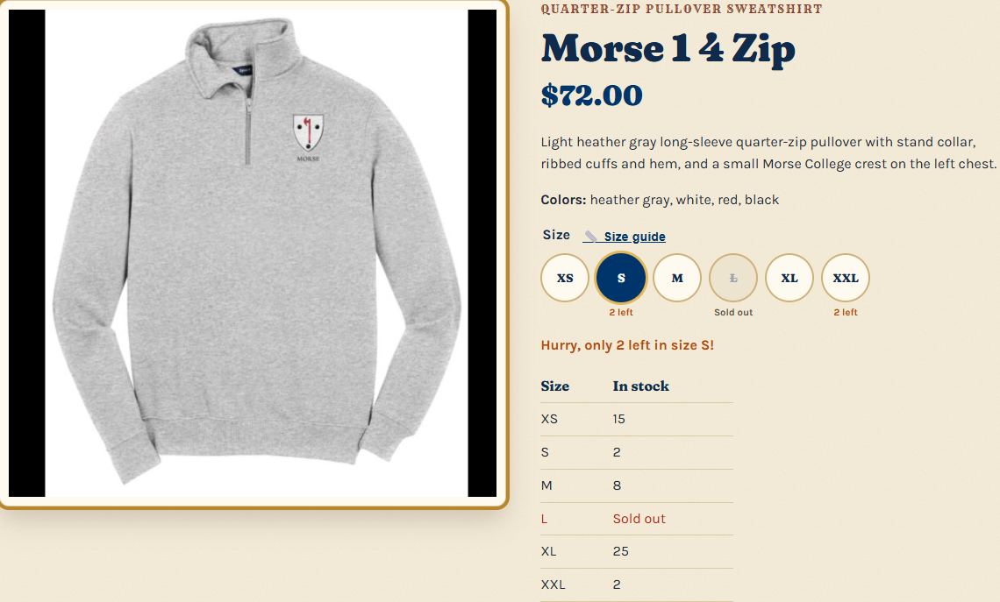
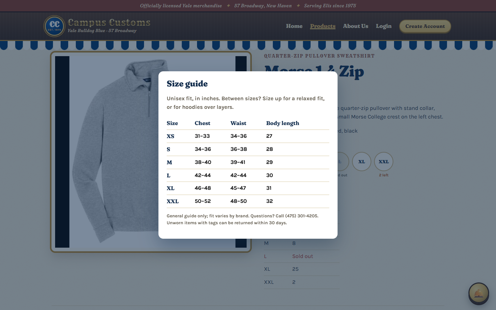
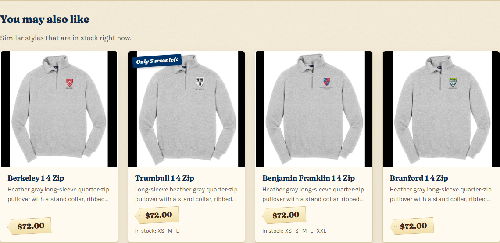

1. Chat checks inventory for an item PASS
On the Morse 1/4 Zip product page, the shopper asked: "How much is this one, and is it in stock in L? What about M?"


DB: morse-1-4-zip | Price | XS | S | M | L | XL | XXL |
|---|---|---|---|---|---|---|---|
| catalogue / inventory | $72.00 | 15 | 2 | 8 | 0 | 25 | 2 |
What this proves: the agent used page context to know which item "this" meant, called its stock tools, and reported the exact database price ($72.00) and quantities. It said clearly that L is sold out (0) and that M has exactly 8, with nothing invented.
2. Category question puts matching product cards on the page PASS
On the Home page, the shopper asked the chat: "What hoodies do you have?"


/products/basic-hoodie-big-yale) with the large image, price, description and stock by size.What this proves: the agent searched the catalogue and returned structured product_ids. The API turned them into cards from the DB, and the front end rendered them on the page. All 8 card prices matched the catalogue table ($68 ×6, $88 ×2), and the cards link to the Problem 3 product pages.
3. Usability feature from Problem 9: low-stock badges + size guide PASS
On the Morse 1/4 Zip product page, the shopper clicked size S, then the "📏 Size guide" link.



find_alternatives tool.What this proves: the Problem 9 front-end features are live in the running app. They show honest, DB-driven urgency and help shoppers pick the right size, which means fewer wrong-size returns.